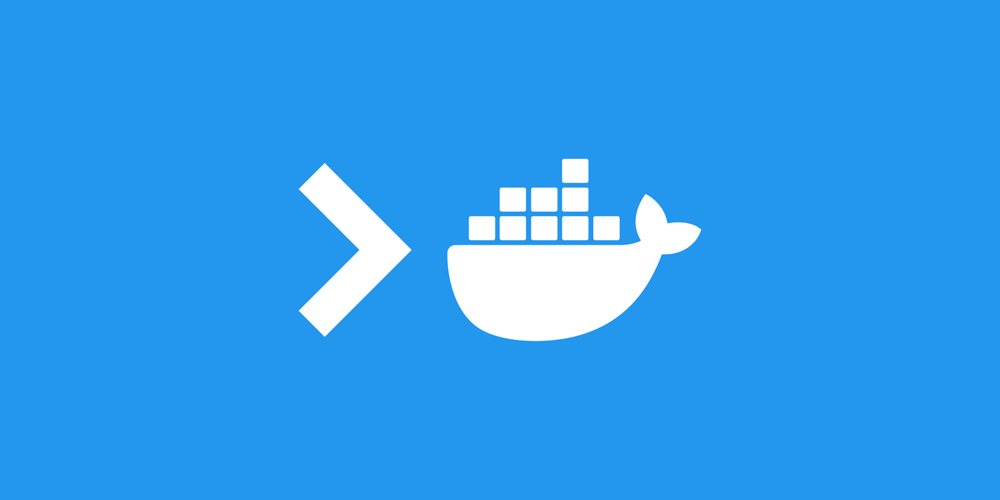

Dockerfile - Shell 與 Exec 的差異
Contents

前陣子都在忙 CKAD 的好久沒有在公司 Bookstack 耕耘了 XD ~
會看到這篇是因為 邱 sir 的導讀 懶惰沒有導讀完 所以我才產出這篇文 (竟敢斗膽說邱 sir 懶惰!!)
Docker Shell vs. Exec Form - Christian Emmer
余誓以至誠
I promise
To say container registries rather than docker registries
I promise
To say container images rather than docker images
I promise
To say containers or OCI containers rather than docker containers
————-
宣示人: 台中彭于晏 中華民國 110 年 12 月 20 號，手放下!
Docker Shell vs. Exec Form
shell 型式: command 會以 「shell 的子進程」 (child processes) 的方式被執行。
Exec 型式 (JSON format ?): 將不會透過 shell 執行。
(作者的觀點) 一般來說，除非要使用到 shell 的功能，不然都推薦使用 exec 型式。如果在 ENTRYPOINT, CMD 也需要用到的話，建議寫進 shell script 並且以 exec 型式執行。
RUN: 推薦使用 shell formCMD,ENTRYPOINT: exec form
案例分享 Use cases
- 變數置換 Variable substitution: 以 shell 來說 command 會繼承環境變數 (environment variables)，exec 則不會。
|
|
如果在 Dockerfile 當中設定 ENV 的話，兩者結果會一樣
|
|
shell 的功能
- sub command.
ip a - piping output.
ls -al /home | grep 'root' - chaining commands.
my_var='Hello world.' && echo $my_var - I/O redirection.
cat /etc/fstab > /tmp/fstab.bak
以上這些常用的功能都只有使用 shell 型式時才能享有。
Signal trapping & forwarding
大部分的 shell 並不會將 process signals 導向給 child processes，例如: 按下 ctrl + c 時並不會讓 child processes 停止。
這是大部分的 ENTRYPOINT 與 CMD 使用 exec form 的原因。 註: 原文這邊應該是打錯了，把 CMD 誤植為 SHELL。
|
|
最上方 Note 的部分有提到 Alpine Linux 的 /bin/sh 使用的是 busybox 裡面的 ash，當執行 /bin/sh -c 時會直接由 parent process (ash 本人執行)。 換句話說 Alpine Linux 並不會有 按下 ctrl + c 時並不會讓 child processes 停止 的情形發生。
[特殊情形] CMD 當作 ENTRYPOINT 的參數
這個我在 CKAD Note Section 3 Configuration - 37. [Pre-Request] Commands and Arguments in Docker 有寫到
|
|
這種用法 shell form 沒辦法做到!
Author 老柯
LastMod 2022-06-22 (527a6d8)